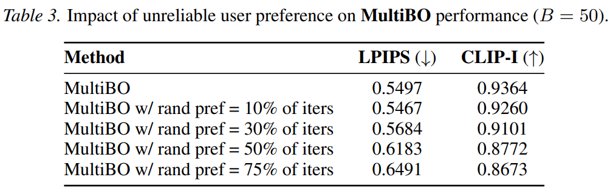
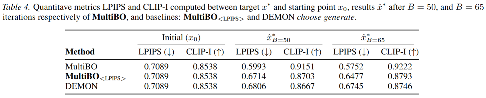

Figure 2: Qualitative Examples when {\name} converges in $B < 50$, mostly converging around $B = 20 - 30$. For prompts: ``A peaceful, nature-filled landscape with vibrant flowers and trees and a serene cloud-filled sky.",
``a stunning 3d render of towering, giant blooming plants with vibrant, colorful flowers on a picturesque mountain landscape. sunlight dances on the petals, creating an enchanting scene as the wind gently sways the plants, with snow-capped peaks in the distance.",
``a tidal wave approaching a coastal road",``The smooth, glossy finish of the ceramic vase accentuated the vibrant colors of the flowers, a stunning centerpiece of beauty.",``The smooth, cool surface of the river rocks were perfect for skipping across the water's surface.",
``A wolf wearing a sheep halloween costume going trick-or-treating at the farm", ``Amidst a stormy, apocalyptic skyline, a masked warrior stands resolute, adorned in intricate armor and a flowing cape. Lightning illuminates the dark clouds behind him, highlighting his steely determination.
With a futuristic city in ruins at his back and a red sword in hand, he embodies the fusion of ancient valor and advanced technology, ready to face the chaos ahead."
3. Performance in presence of inconsistent user preference

Figure 3: Qualitative Examples with different amounts ($10, 30, 50, 75 \%$) of unreliable user preference input to {\name} ($B=50$). For prompts: ``A person in a suit holding a sword.", ``A forest with blue flowers illustrated in a digital matte style by Dan Mumford and M.W Kaluta.",
``A swirling, multicolored portal emerges from the depths of an ocean of coffee, with waves of the rich liquid gently rippling outward. The portal engulfs a coffee cup, which serves as a gateway to a fantastical dimension. The surrounding digital art landscape reflects the colors of the portal,
creating an alluring scene of endless possibilities.",``an electron cloud model is displayed in vibrant colors with a light spectrum background, showcasing the probability distribution of electrons around the nucleus. the image resembles digital art with pixelated elements, bringing a modern,
educational twist to atomic structure visualization.", ``The fragrant flowers bloomed on the sturdy stem and the thorny bush.", ``A girl is holding a large kite on a grassy field.", ``a tidal wave approaching a coastal road", ``a dog and a frog".
4. Randomizations
Figure 4: Qualitative Examples for different starts $x_0$ and same target $x^*$. For prompts: ``an electron cloud model is displayed in vibrant colors with a light spectrum background, showcasing the probability distribution of electrons around the nucleus. the image resembles digital
art with pixelated elements, bringing a modern, educational twist to atomic structure visualization.",``The smooth, cool surface of the river rocks were perfect for skipping across the water's surface." Figure 5: Qualitative Examples for same start $x_0$ and different targets $x^*$:. For prompts: ``A wolf wearing a sheep halloween costume going trick-or-treating at the farm", ``a stunning 3d render of towering, giant blooming plants with vibrant, colorful flowers on a picturesque mountain landscape.
sunlight dances on the petals, creating an enchanting scene as the wind gently sways the plants, with snow-capped peaks in the distance." Figure 6: Qualitative Examples for same start $x_0$ and same target $x^*$ for two {\name} runs with different optimization seeds. For prompts: ``a tidal wave approaching a coastal road", ``The smooth, cool surface of the river rocks were perfect for skipping across the water's surface.", ``The fragrant
flowers bloomed on the sturdy stem and the thorny bush."
5. Performance for far away starts

Figure 7: Qualitative Examples of {\name} for far away starting images $x_0$ (missing objects, wrong colors, etc.). For prompts: ``a bird and a mouse", ``The fragrant flowers bloomed on the sturdy stem and the thorny bush.", ``a monkey and a frog", ``A cyberpunk woman on a motorbike drives away down
a street while wearing sunglasses.", ``a elephant with a bow".
6. Attention Warping Artifacts
Figure 8: A few Examples of Attention Warping artifacts.